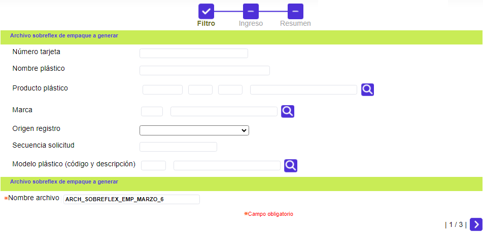
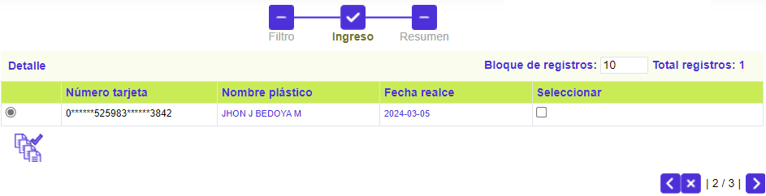
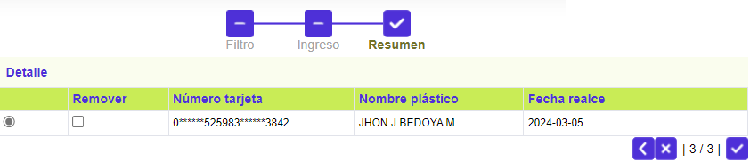
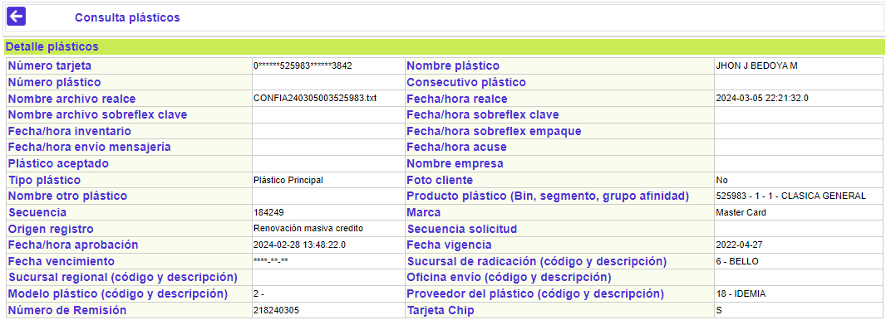

Sobreflex de empaque
Mediante esta funcionalidad, se habilita la selección de aquellos plásticos que, durante el proceso de las diferentes solicitudes, arriban a la etapa de generación de sobreflex de empaque, para generar el archivo a utilizar por la entidad, para imprimir los sobres en los cuales serán empacados los plásticos realzados, con el fin de hacer entrega de los mismos a los clientes.
Al ingresar a la opción, se despliega con un wizard de tres pasos, en el que el primero corresponde a un filtro, en el cual es necesario diligenciar al menos un criterio, que permita ubicar las tarjetas a incluir dentro del archivo de impresión de los sobres de empaque.

Descripción de campos
|
Número tarjeta |
Campo alfanumérico de hasta 23 posiciones en el que se puede ingresar el número de alguna tarjeta en particular que se desee consultar para generar el archivo de sobreflex de empaque. |
|
Nombre plástico |
En este campo se ingresa como criterio para la consulta el nombre del cliente tal y como aparece realzado en el plástico al cual se desea generar el archivo de sobreflex de empaque. |
|
Producto plástico |
Campo con lista de valores de la que se puede seleccionar el producto al cual pertenecen los plásticos que se desea consultar para generar el archivo de sobreflex de empaque. |
|
Marca |
En este campo con lista de valores, se selecciona según el caso la marca asociada con los productos a los que pertenecen los plásticos que se desea consultar para generales el archivo de sobreflex de empaque. |
|
Origen registro |
Campo tipo combo en el cual se selecciona el evento que dió origen a la solicitud de los plásticos que se desea consultar para generarles el archivo de sobreflex de empaque. Las opciones contenidas en este combo son Crédito empresarial corporativo, Crédito convenio, Renovación individual crédito, Renovación masiva crédito, Reexpedición crédito, Crédito normal, Tarjeta débito, Cambio masivo de productos crédito, Recordatorio sobreflex de clave, Reposición, Reactivación, Renovación masiva débito, Reexpedición débito, Renovación débito, Reposición débito y Renovación masiva débito. |
|
Secuencia solicitud |
En este campo numérico se puede ingresar el número de la solicitud específica para la cual se desean consultar los plásticos para generarles el archivo de sobreflex de empaque. |
|
Modelo plástico (código y descripción) |
Campo con lista de valores que permite seleccionar el modelo de plástico asociado con las tarjetas para las cuales se desea consultar y ejecutar el proceso de generación de sobreflex de empaque. |
|
Nombre archivo |
En este campo obligatorio, se debe ingresar el nombre con el cual se va a identificar el archivo a generar con la información para la impresión de los sobres de empaque de las tarjetas seleccionadas. |
Si bien solo con diligenciar el nombre del archivo y avanzar mediante ubicado en la parte inferior derecha, en el segundo paso del wizard, el sistema recupera y despliega todos los registros almacenados en la base de datos para los que se deba surtir esta etapa, y los muestra por bloques de hasta 10 registros (ampliable a 100). Si por el contrario, se requiere ubicar solo una parte de dichos registros, una vez seleccionados los criterios y utilizando el botón avanzar, en el segundo paso del wizard, el sistema muestra, únicamente aquellos registros de las tarjetas que cumplen con las condiciones indicadas por el usuario, ilustrando para cada uno de ellos: el número de tarjeta (enmascarado si aplica), el nombre realzado en el plástico, la fecha de realce (embosado) y el campo Seleccionar..
Es de aclarar, que en el caso que las tarjetas desplegadas correspondan a tipo débito generadas masivamente, el campo Nombre plástico se mostrará en blanco.
Esta segunda página del wizard cuenta con la opción Detalle, que le permite al usuario invocar un nuevo formulario con la información completa del registro seleccionado y adicionalmente contiene un botón especial que le permite a la entidad generar el archivo de sobreflex de empaque para la totalidad de los registros desplegados.

En la tercera página del wizard, se muestran los registros que el usuario haya seleccionado para ejecutar el proceso de generación de sobreflex de empaque, en caso que éste no se vaya a aplicar para todos los registros desplegado en la segunda página y mediante el botón finalizar se ordena la generación del archivo respectivo; al igual que la segunda página del wizard este formulario también contiene el hipervínculo Detalle .
La casilla remover le permite al usuario marcar aquellos registros que había seleccionado previamente pero que por alguna razón ya no desea incluir en el archivo de sobreflex de empaque.

Detalle: si desde la segunda o tercera página del wizard el usuario selecciona un registro e invoca la opción Detalle, se despliega un formulario con la información completa del registro y cuyos campos se describen a continuación. Ninguno de los datos allí contenidos puede ser modificado.

Descripción de campos
|
Número tarjeta |
Campo en el que se despliega el número (enmascarado si aplica) de la tarjeta para el cual se está consultando la información. |
|
Nombre plástico |
En este campo se muestra el nombre del cliente titular de la tarjeta tal y como aparece realzado en el plástico. |
|
Número plástico |
Campo que contiene el consecutivo que identifica el plástico utilizado durante el proceso de embosado o realce de la tarjeta. |
|
Consecutivo plástico |
Campo que contiene el consecutivo que identifica el registro asociado a la tarjeta dentro del archivo de realce. |
|
Nombre archivo realce |
Despliega el nombre del archivo de realce dentro del cual se incluyó el registro correspondiente al plástico asociado al número de tarjeta. |
|
Fecha / hora realce |
Indica la fecha y hora en la cual se generó el archivo de realce en el cual se encuentra contenida la tarjeta consultada. |
|
Archivo sobreflex de clave |
Despliega el nombre del archivo de sobreflex de clave dentro del cual se incluyó el registro correspondiente a la información del PIN o clave de la tarjeta. |
|
Fecha / hora sobreflex de clave |
Campo que contiene la fecha y hora en la que se generó el archivo mediante el que se genera el sobreflex con el PIN o clave que permite al cliente el uso del plástico. |
|
Fecha / hora inventario |
Muestra la fecha y hora en la cual se aplicó el control de inventario a la tarjeta y mediante la cual se le asignó a la tarjeta el número de plástico respectivo. |
|
Fecha / hora sobreflex de empaque |
Campo que contiene la fecha y hora en la que se generó el archivo mediante el que se imprimen los sobres de seguridad en los cuales son empacados los plásticos para ser enviados al cliente. |
|
Fecha / hora envío mensajería |
Este campo muestra la fecha y hora en la que se generó el archivo con el cual se envió a la empresa de mensajería el plástico realzado con el fin de ser entregado al cliente. |
|
Fecha / hora acuse |
Campo que muestra la fecha y hora en la cual se registró en el sistema la aceptación o rechazo del plástico por parte del cliente. |
|
Plástico aceptado |
En este campo se indica Si o No el cliente aceptó el plástico realzado y enviado por la entidad financiera. |
|
Nombre empresa |
Para el caso de tarjetas de productos empresariales, en este campo se muestra el nombre de la empresa a la cual se le aprobó la obligación por parte de la entidad. |
|
Tipo plástico |
Campo que indica si el plástico asociado con la tarjeta consultada corresponde a un Plástico principal es decir, a la materialización del crédito otorgado, u Otro plástico en caso de aquellos plásticos secundarios o accesorios que de acuerdo con lo definido en el producto se entregan adicionalmente a la tarjeta propiamente dicha y que sirven para formalizar extensión de beneficios o un trato preferencial a los titulares de los mismos. |
|
Foto cliente |
Indica si de acuerdo con los parámetros del producto y las características del modelo de plástico asociado, el plástico lleva impresa o no la fotografía del cliente. |
|
Nombre otro plástico |
Cuando en el campo Tipo plástico se indica que el registro corresponde a Otro plástico, en este campo se muestra la descripción o nombre del mismo. |
|
Producto plástico |
En este campo se muestra el bin, segmento, grupo de afinidad y descripción del producto al que pertenece la tarjeta. |
|
Secuencia |
Campo que muestra la secuencia asignada internamente por el sistema y de manera automática a cada uno de los plásticos que ingresan a la etapa de realce, lo que permite diferenciarlo de los demás. |
|
Marca |
En este campo se despliega la marca asociada con el producto al que pertenece el plástico del cual se está consultando el detalle. |
|
Origen registro |
Este campo muestra el evento que dió origen a la solicitud de los plásticos que se desea consultar para realce. Las opciones contenidas en este combo son Crédito empresarial corporativo, Crédito convenio, Renovación individual crédito, Renovación masiva crédito, Reexpedición crédito, Crédito normal, Tarjeta débito, Cambio masivo de productos crédito, Recordatorio sobreflex de clave, Reposición, Reactivación, Renovación masiva débito, Reexpedición débito, Renovación débito, Reposición débito y Renovación masiva débito. |
|
Secuencia solicitud |
Campo que contiene el número o secuencia de la solicitud a la cual se encuentra asociado el plástico actual. |
|
Fecha / hora aprobación |
Campo que contiene la fecha y hora en la cual se aprobó la solicitud mediante la cual se incluyó el registro en la etapa de plásticos correspondiente (realce o sobreflex de clave). |
|
Fecha vigencia |
En este campo se muestra la fecha a partir de la cual tiene vigencia el plástico del cual se está consultando el detalle. |
|
Fecha vencimiento |
Campo que contiene la fecha (enmascarada si aplica) hasta la cual tendrá vigencia o validez el plástico de acuerdo con lo parametrizado para el producto al que pertenece.. |
|
Sucursal radicación |
En este campo se muestra el código de la sucursal ante la cual se encuentra radicada la obligación que origina la generación del plástico. |
|
Sucursal regional |
Campo en el que se despliega la código de la sucursal a la cual se encuentra adscrita o pertence la obligación. |
|
Oficina envío |
En este campo se muestra el código de la sucursal de la entidad a la que se va a enviar el plástico |
|
Modelo plástico |
Campo que muestra el modelo de plástico a utilizar para elaborar el realce o embozado de la tarjeta. |
|
Proveedor plástico |
Este campo muestra el nombre del proveedor encargado de suministrar el plástico en el cual se va a efectuar el realce de la tarjeta. |
|
Número remisión |
Despliega el número de documento con el cual se remisionaron los plásticos durante el proceso de realce que se hace desde esta misma opción. |
Botones especiales
Generar sobreflex de empaque: si desde la primera página del wizard el actor invoca el botón Generar sobreflex de empaque, se ejecuta el proceso mediante el cual se genera el archivo a utilizar para la impresión de los sobres de empaque para todos los registros consultados.